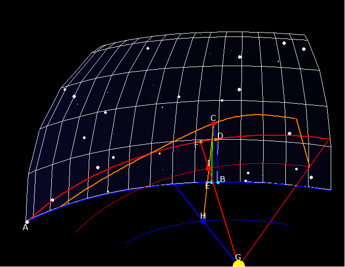

Chapter 9
When the longitudinal location of a planet is given, such as 23°59'11" Pisces, it is rare that the planet is actually located at that position on the great circle of the ecliptic. The latitude above or below the ecliptic must be taken into account for observations, and for determining the planet's path. The ecliptic position of a planet is
that point on the ecliptic at which the circle of latitude (at right angles to the ecliptic) passing through the sidereal position of the planet's body intersects the ecliptic.
This is analogous to determinations of position on the earth. There is one equator which serves to orient us,
along which we measure longitude. The latitude is the length of the shortest line from a point to the equator,
hitting the equator at a right angle. However, for measuring locations along the path of a moving planet, this
has a problem: this shortest line to the equator hits the equator at a right angle, but is oblique to the
planetary orbit. This means that the distance of longitude along the eccliptic does not measure the distance along the planet's path.
Consequently, the arc between the planet's position on its orbit and the nearest node is always greater than that between its ecliptic position and the same node.
This must be corrected to determine the arc of eccentric the planet has actually traversed. Kepler demolishes the unsatisfactory method that others had employed to perform this correction:
[T]hose who constructed the tables thought that the planet is not exactly at opposition to the sun unless AC (the observed distance of the planet from the node) is equal to arc AB, the elongation of the place opposite the sun from the same node.
Work in progress!
NB: This animation has the earth and Mars moving at the same speed and in the wrong direction. This is to make the spherical geometry clear. There is another animation showing the correct motions. Also, the stars aren't really arranged around the sun in a sphere, but you knew that! :-)
 Here, we have the earth (H) and Mars (I) moving around the sun (G). The earth's position in the ecliptic (E) is a right angle leading to the sun's view of Mars (F) and the earth's view of Mars (C). But (B) is the spot on the ecliptic making arc AB equal in length to AC.
Here, we have the earth (H) and Mars (I) moving around the sun (G). The earth's position in the ecliptic (E) is a right angle leading to the sun's view of Mars (F) and the earth's view of Mars (C). But (B) is the spot on the ecliptic making arc AB equal in length to AC.
Some say that the planet should be said to be in opposition when the point B is opposite the sun, but this would remove the reason for looking at opposition in the first place -- to remove the second inequality!
Using AB is not correct. Although it is true that Mars has moved further on its eccentric than spot E has along the ecliptic, AB is too long! The planet is actually moving along arc AF as seen from the sun, which is a shorter arc than AC -- its arc as seen by the earth.
"This is contrary to what they proposed to do... The arc AC has nothing to do with the first inequality."
The true correction that ought to be made is actually quite small -- Kepler puts it at about a minute at 45° (where it reaches a maximum). Incorrectly using AB instead of AD creates an excess of length that "can be in error by as much as 7 and 9 minutes."

The animation again, but now the earth and Mars move with their proper speeds! Now you can see both proposed opposition times. The line from the sun through the earth intersects E, then B. The E intersection is the real opposition, and the B intersection is the false correction attacked by Kepler.